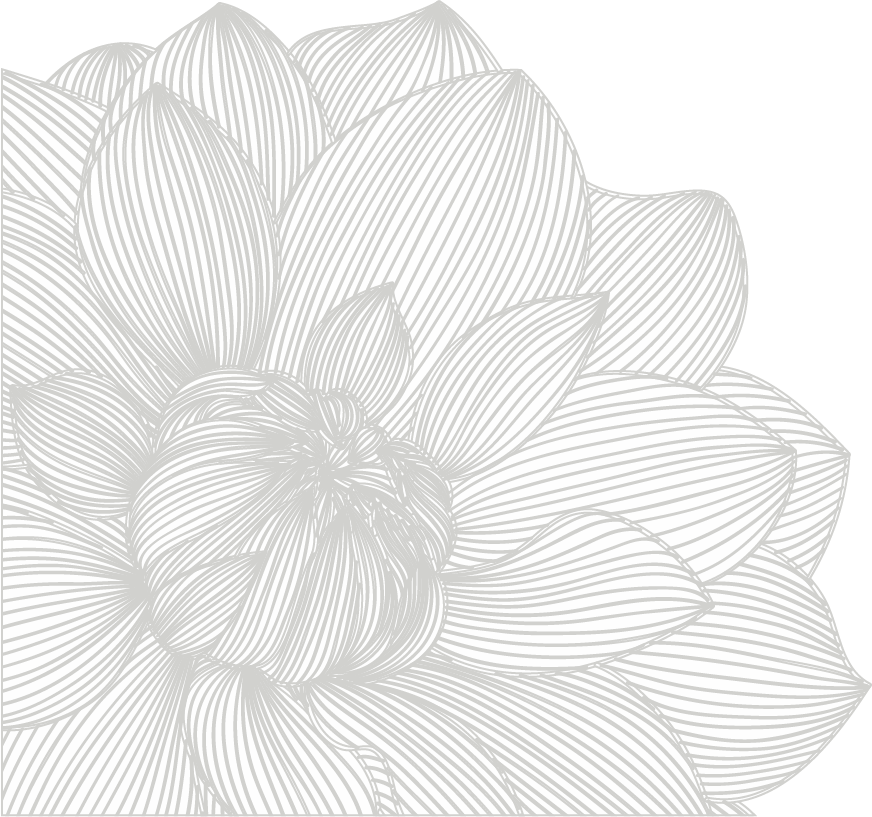
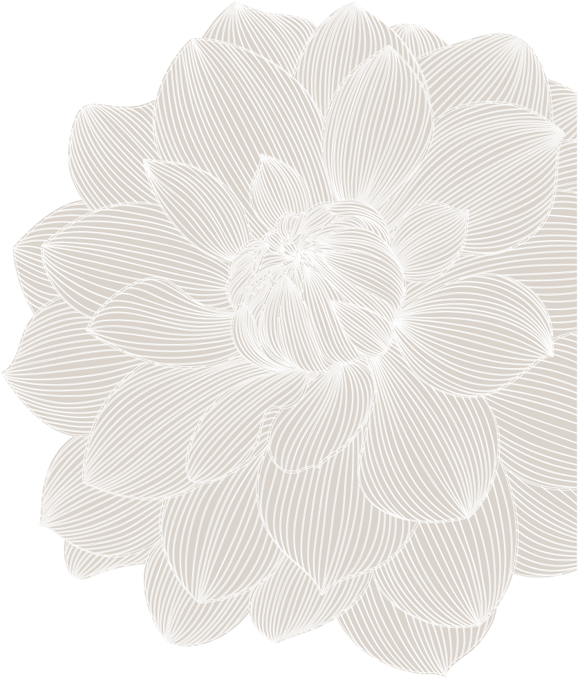

Tema 1
GRUNDLÆGGENDE WEB
RESPONSIVE SITE
Under dette tema har jeg udarbejdet en hjemmeside om stilarten pop art. Der blev udarbejdet et moodboard, der illustrerede det visuelle udtryk, jeg gerne ville have for hjemmesiden. Jeg har valgt nogle stærke og fremtrædende farver på hjemmesiden, der også er karakteristika for kunstarten.
Jeg blev i dette forløb introduceret til de grundlæggende faglige begreber inden for design af digitale brugergrænseflader, digital indholdsproduktion, digital kommunikation, og responsivt webdesign.
Grundstenen i forløbet har været at sætte en webside op med html og css. Derudover fik jeg mine første hands-on færdigheder inden for billedbehandling i Photoshop, opsætning af tekst og billeder i Adobe inDesign og Adobe XD.

Tema 2
GRUNDLÆGGENDE ANIMATION
SPIL
I dette tema skulle jeg udvikle mit eget spil. Da jeg havde en spilide, gik jeg i gang med at udarbejde et aktivitetsdiagram, som beskriver den rækkefølge aktiviteterne foregår i. Sidste step inden jeg kunne kode mit spil, lavede jeg et State Machine Diagram, der illustrerede de guidelines, der var for spillet. The Happy Turtle handler, om at samle plastik fra havet, så man kan redde den lille skildpadde og marinelivet. Min stil inspiration til karakterdesignet var Kawaii.
Jeg har benyttet JavaScript til at udvikle mit spil. Mine animationer og mit spil er blevet lavet på baggrund af karakterdesign, baggrundsdesign og ved hjælp af en interaktiv storytelling.

Tema 3
GRUNDLÆGGENDE INDHOLD
REDESIGN AF WEBSITE
Under dette tema skulle min gruppe og jeg lave et redesign for en selvvalgt virksomhed. Vi valgte at lave et redesign for Bondegården, der er en bemandet udendørs legeplads. Formålet var at skabe et forbedret redesign for den eksisterende hjemmeside. Vi udarbejdede en virksomhedsundersøgelse og en brugerundersøgelse. På baggrund af vores undersøgelser kunne vi konkludere, at virksomhedens hjemmeside var meget forældet og henvendte sig ikke hensigtsmæssigt til sin målgruppe, derudover blev deres koncept ikke vist som ønsket. Vi udviklede herefter en hjemmeside, der viser virksomhedens koncept meget klart og enkelt. Som ekstra designede vi et letgenkendeligt logo til virksomheden.
Tema 4
GRUNDLÆGGENDE UX
NATIVE APP
I dette tema er jeg blevet introduceret til UX design. Det første projekt, jeg havde, var at udvikle en mobilløsning til Fronter. Formålet med dette var at forbedre brugervenligheden på Fronter for KEA’s studerende. Prototypen blev udviklet af vores undervisere og sidenhen håndkodet.
Det andet projekt var at udvikle en native app. Denne app blev udviklet på baggrund af en uges design sprint. På baggrund af vores research kunne vi konkludere, at de studerende manglede et overblik over dagens program. Vores mål var at lave en app, som gjorde det let tilgængelig for de studerende at være up to date med de vigtigste informationer.